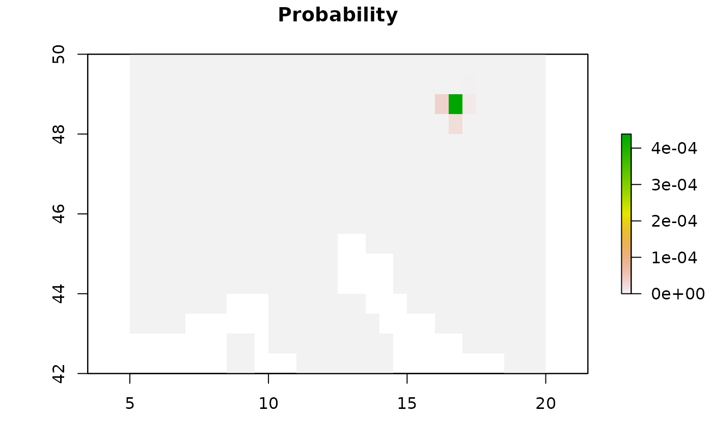

This function convert the raster of noramlized MSE and altitude threshold \(z_{thr}\) computed
by geopressure_map() into a probability map with,
\(p = \exp \left(-w \frac{MSE}{s} \right) \left[z_{thr}>thr \right],\)
where \(s\) is the standard deviation of pressure and \(thr\) is the threashold. Because the
auto-correlation of the timeseries is not accounted for in this equation, we use a log-linear
pooling weight \(w=\log(n) - 1\), with \(n\) is the number of data point in the timeserie.
This operation is describe in https://doi.org/10.21203/rs.3.rs-1381915/v1.
Usage
geopressure_prob_map(
pressure_maps,
s = 1,
thr = 0.9,
fun_w = function(n) {
log(n)/n
}
)Arguments
- pressure_maps
List of raster built with
geopressure_map().- s
Standard deviation of the pressure error.
- thr
Threshold of the percentage of data point outside the elevation range to be considered not possible.
- fun_w
function taking the number of sample of the timeseries used to compute the probability map and return the log-linear pooling weight (see the GeoPressureManual | Probability aggregation )
Examples
# See geopressure_map() for generating pressure_maps
if (FALSE) {
pressure_prob <- geopressure_prob_map(
pressure_maps,
s = 0.4,
thr = 0.9
)
pressure_prob_1 <- pressure_prob[[1]]
}
pressure_prob_1 <- readRDS(system.file("extdata/1_pressure/", "18LX_pressure_prob_1.rda",
package = "GeoPressureR"
))
raster::metadata(pressure_prob_1)
#> $sta_id
#> [1] 1
#>
#> $nb_sample
#> [1] 211
#>
#> $max_sample
#> [1] 250
#>
#> $temporal_extent
#> [1] "2017-07-27 01:00:00 UTC" "2017-08-04 19:00:00 UTC"
#>
#> $margin
#> [1] 30
#>
raster::plot(pressure_prob_1,
main = "Probability",
xlim = c(5, 20), ylim = c(42, 50)
)
